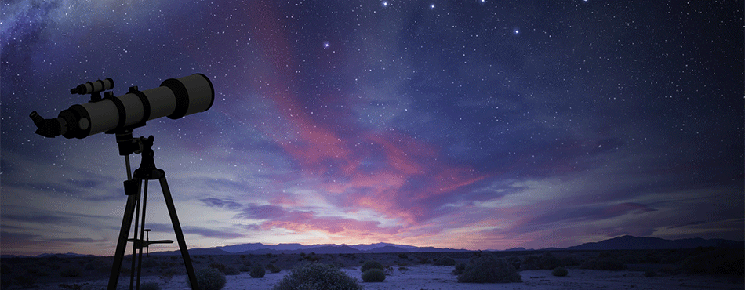
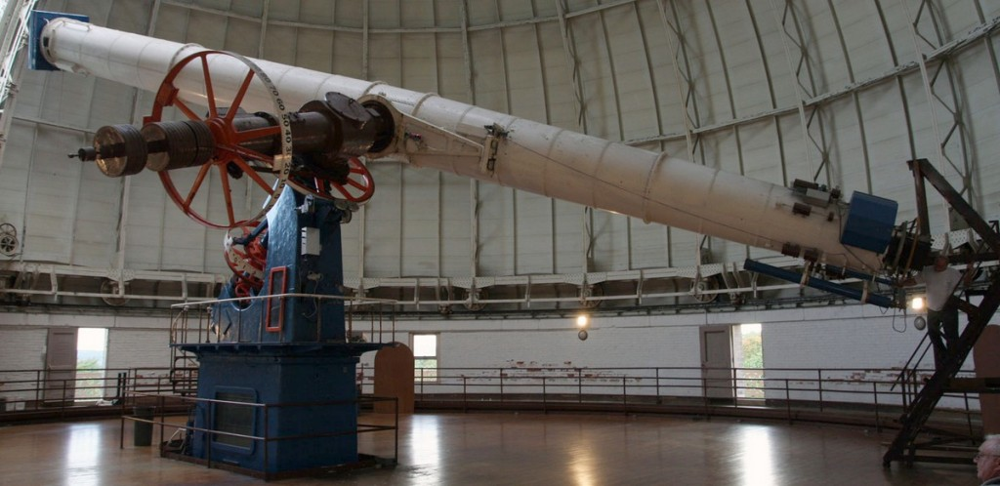

Ce que nous savons de l'espace a été découvert grâce aux lunettes astronomiques et aux télescopes, qui permettent d'observer des objets lointains. Ces instruments optiques collectent la lumière émanant du plus profond de l'espace mais sont limités par la taille des miroirs et des lentilles.
La lunette utilise une lentille en verre convexe (bombée) pour collecter et focaliser la lumière entrante. Un oculaire grossit l'image. Le problème des lentilles est qu'elles sont lourdes. Trop grandes, elles tendent à se distordre, ce qui déforme l'image. La taille et la puissance des lunettes s'en trouvent limitées.
Construite en 1897, la lunette Yerkes est équipée d'une lentille de 1 m de diamètre et pèse 5,5 tonnes, autant qu'un éléphant d'Afrique.
